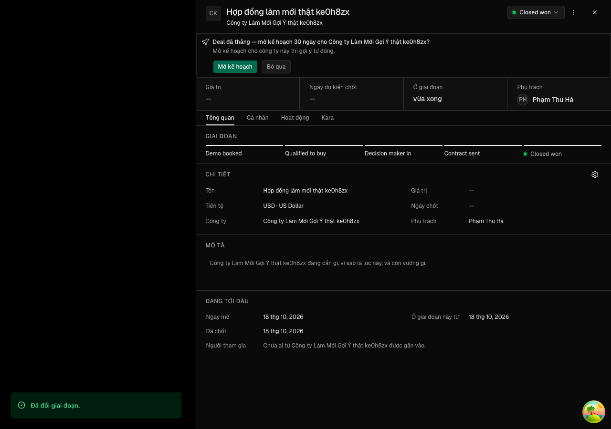
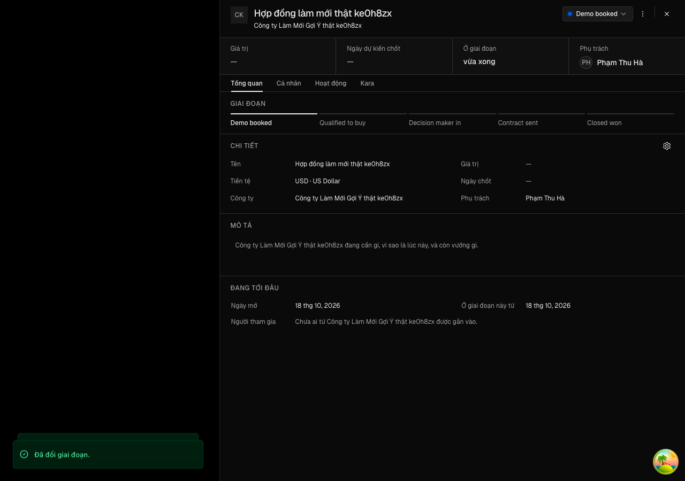

"Đổi giai đoạn ngay trên sheet deal thì thẻ gợi ý mở kế hoạch hiện ngay khi sang Chốt được và ẩn ngay khi rời Chốt được"
Vì sao làm
Người phụ trách deal. Khi họ chuyển deal sang giai đoạn Chốt được ngay trên sheet deal đang mở (thanh giai đoạn StageStepper hay menu giai đoạn ở đầu sheet DealStageMenu), thẻ «Deal đã thắng — mở kế hoạch 30 ngày cho <công ty>?» không hiện: thẻ đọc onboarding.goiYCuaDeal, query ấy giữ kết quả cũ (null) tới 30 giây, và useCrmCache().deal(id) — lệnh làm mới chung sau mọi lần đổi giai đoạn — không làm mới nó. Họ phải đợi khoảng nửa phút hay đóng rồi mở lại sheet. Chiều ngược lại cũng vậy: deal rời Chốt được thì thẻ cũ còn trên sheet một lúc, mời mở kế hoạch cho một deal không còn ở Chốt được. Thẻ là kênh chính để người phụ trách xử lý gợi ý — mà ngưỡng đã ký của DA3b đếm tỉ lệ gợi ý được xử lý trong 3 ngày.
Đã hứa
- AC-1 — (cross-layer) Given sheet deal thật (`DealSheet`) dựng trong bài kiểm giao diện với dữ liệu giả, lệnh làm mới thật (`useCrmCache` của `apps/app/lib/trpc/cache.ts`) và bộ nhớ query giữ kết quả 30 giây như app, deal ở giai đoạn Đang mở và `goiYCuaDeal` trả `null`, When người phụ trách bấm cột Chốt được trên thanh giai đoạn và `deals.setStage` trả thành công, máy chủ giờ trả một gợi ý «chờ», Then thẻ gợi ý hiện trong chính sheet đang mở, cùng phần tử sheet trước lúc bấm, trước khi 30 giây giữ kết quả trôi qua, và `goiYCuaDeal` được đọc lại với đúng `{ dealId }` của deal; và trên API thật, đọc `goiYCuaDeal` ngay sau `setStage` sang Chốt được trả gợi ý «chờ».
- AC-2 — Given cùng sheet và dữ liệu của AC-1, When người phụ trách chọn giai đoạn Chốt được ở menu giai đoạn đầu sheet, Then thẻ gợi ý hiện như AC-1.
- AC-3 — (cross-layer) Given sheet của deal ở giai đoạn Chốt được có thẻ gợi ý, When người phụ trách đưa deal về giai đoạn Đang mở — một lần qua thanh giai đoạn, một lần qua menu giai đoạn — và máy chủ giờ trả `null`, Then thẻ mất khỏi sheet đang mở ở cả hai đường; và trên API thật, đọc `goiYCuaDeal` sau khi deal rời Chốt được trả `null`.
- AC-4 — Given lệnh làm mới thật trên bộ nhớ query có `goiYCuaDeal` của hai deal d-1, d-2 đang được đọc, When gọi `cache.deal("d-1")`, Then `goiYCuaDeal` của d-1 được đọc lại trước khi lời gọi xong, còn của d-2 không; When gọi `cache.deal("d-1", { settle: "record" })`, Then `goiYCuaDeal` của d-1 vẫn được đọc lại trước khi lời gọi xong; When gọi `cache.deal()` không id, Then `goiYCuaDeal` của cả hai được đọc lại; When quét `apps/app`, Then mọi lời gọi `deals.setStage` và `deals.bulkSetStage` nằm trong bảng bốn nơi khai trước (thanh giai đoạn · `useStageMutation` của menu và hộp lý do Không thành · Kanban · hàng loạt) và khối `mutationOptions` của từng nơi gọi `cache.deal`.
- AC-5 — Given bản sao kho, When gỡ `goiYCuaDeal` khỏi `cache.deal` trong bản sao, Then bài kiểm của AC-1, AC-3 và AC-4 đỏ với thông điệp ghim của từng ca; When đổi khoá thành khoá chung không theo deal trong bản sao, Then bài kiểm của AC-4 đỏ với thông điệp ghim «làm mới gợi ý deal khác»; trên bản sao lành cả bốn bài kiểm xanh.
- AC-6 — Given app và API của chính cây đang chạy trên kho dùng-một-lần, người phụ trách P đăng nhập, deal của một công ty chưa có kế hoạch ở giai đoạn Đang mở, sheet deal mở ở 1280 và không có thẻ, When P bấm cột Chốt được trên thanh giai đoạn, Then thẻ gợi ý hiện trong vòng 5 giây mà không tải lại trang và không dựng lại sheet; When P bấm một cột Đang mở, Then thẻ mất trong vòng 5 giây, sheet vẫn là sheet ban đầu; thước màn phải đỏ khi trang giữ treo mọi lần đọc lại `goiYCuaDeal` sau khi thẻ đã hiện rồi P bấm cột Đang mở (thẻ không được mất). Chiều hiện của lượt tự thử ấy (giữ treo từ lần tải đầu rồi bấm cột Chốt được) không thuộc tiêu chí này — xem Known limits ở Notes.
- AC-7 — Given bộ kiểm hiện có của kho, When chạy các suite của `feature_loop.suite_keys` sau lượt này, Then mọi suite thoát 0, không `expect` nào bị xoá hay sửa ở các tệp kiểm đã có, và `check-types` thoát 0.
Thiết kế
docs/superpowers/specs/2026-10-16-lam-moi-goi-y-ke-hoach-design.md
Quyết định
- 2026-10-16 · Máy · approach · S1 — Làm mới gợi ý ở một chỗ — khối deal của useCrmCache — thay vì cho thẻ tự làm mới khi giai đoạn đổi hay gọi làm mới ở từng nút đổi giai đoạn.Mọi đường đổi giai đoạn của app đều gọi cache.deal (design doc mục 2), và docs/api.md cấm liệt kê khoá ở chỗ gọi.
- 2026-10-16 · Máy · approach · S1 — Khoá gợi ý vào phần được chờ của cache.deal, nên thẻ đổi cùng nhịp với nhãn giai đoạn và cả ô sửa tại chỗ (settle record) cũng chờ nó.StageStepper chờ cache.deal xong mới báo đã cập nhật giai đoạn; phần nền không được chờ (hàm run của apps/app/lib/trpc/cache.ts).
- 2026-10-16 · Máy · descope · S1 — bỏ design-pass — lượt này không đổi hình thẻ hay sheet, chỉ đổi lúc thẻ đọc lại dữ liệu; hình thẻ đã duyệt ở DA3b (E6).Bản bấm được sẽ giống hệt bản của goi-y-mo-ke-hoach; ảnh trước/sau đổi giai đoạn vẫn có ở E6 của vòng này.
- 2026-10-16 · Máy · descope · S1 — Không đẩy thời gian thực khi gợi ý sinh từ nơi khác trong lúc sheet đang mở — giữ 30 giây tươi của app.Kho chưa có kênh đẩy; mọi màn khác cũng dựa vào làm mới sau lệnh ghi (docs/api.md mục Freshness).
- 2026-10-16 · Máy · approach · S1 — Bài kiểm mới dùng khung khung-gop-y như bài kiểm của DA3b nhưng gắn lại lệnh làm mới thật thay cho bản rỗng của khung.apps/app/test/khung-gop-y.tsx thay useCrmCache bằng proxy không làm gì; giữ nguyên thì bài kiểm không chạm chỗ sửa.
- 2026-10-16 · Máy · approach · S1 — Khoá gợi ý vào phần được chờ (record) của cache.deal: thẻ là dữ liệu của chính sheet deal, không phải của bảng, nên nó theo nhịp của bản ghi — kể cả ô sửa tại chỗ dùng settle record.docs/api.md chia phần chờ là thứ ô sửa tại chỗ của bản ghi đợi và phần nền là bảng; thẻ nằm trong sheet của bản ghi. Giá: thêm một lượt đọc nhỏ vào lúc chờ, chỉ cho query đang mở (hàng loạt dùng cache.deal() chỉ đọc lại sheet đang mở).
- 2026-10-16 · Người · seal · gate1 —
- 2026-10-18 · Máy · fix · S4-r1 — Sửa phát hiện trong hợp đồng t3 của AC-4: thêm ca đo quan hệ thứ tự của settle record (gợi ý đọc lại giữ treo thì lời gọi chưa được trả về) và cặp đột biến (e) dời khoá sang phần chạy nền; ô settle record của ma trận đổi thông điệp thành «khong doc lai goi y».Ô cũ chỉ đếm lần gọi nên vẫn xanh khi khoá nằm ở phần chạy nền (review-findings.md lượt 1); đã đo tay: bản đúng 6/6 xanh, đột biến (e) đỏ đúng «gy-lm: settle record khong cho goi y».
- 2026-10-18 · Máy · fix · S4-r2 — Sửa thước sau S4 lượt 2 (REJECT): E6 chụp ảnh theo khung nhìn thay vì cả trang, kiểm sheet còn data-state=open và nhìn thấy, thêm lượt tự thử đỏ cho chiều thẻ mất (t4); ca gy-lm-roi thêm mỏ neo dương sau khi rời thắng và dot-bien thêm cặp (f) ghim thông điệp đường menu (t3); E6 đổi chữ «chặn (abort)» thành «giữ treo» cho đúng cách răng làm.Răng dò .acceptance-runs/lam-moi-goi-y-ke-hoach/do-e6 đo được chụp cả trang co khung nhìn về 1x1 rồi trả lại và làm sheet dựng lại (1/2 lượt có chụp, 0/2 lượt không chụp) — E6 bập bênh vì đo chính máy chụp, không phải vì tính năng; sau sửa man.mjs xanh 3/3 lần liền, cả hai lượt tự thử đỏ đúng hướng.
- 2026-10-18 · Người (manh) · descope · gate2 — Thu phạm vi AC-6: lượt tự thử chiều hiện của thước màn ra Known limits có tên (Notes của hợp đồng), không còn kể là bằng chứng chiều đỏ; chiều đỏ của AC-6 nay là chiều thẻ mất khi đọc lại bị giữ treo; vế bị thu sang hạt giống docs/plan/2026-10-18-hat-giong-tu-thu-hien-the-goi-y.md.người chọn ở Cổng Bằng chứng: «Lối 1 — thu phạm vi: đưa vế «lượt tự thử hiện của thước màn» ở AC-6 ra Known limits có tên, mở hạt giống cho nó; soạn hợp đồng thu hẹp để tôi duyệt lại Cổng Phạm vi, rồi xin làn chấm lại phần còn lại.» — S4 chạm trần 3 lượt, phát hiện t2 lượt 3 cùng lớp kiểm âm tính đứng một mình với lượt 2.
- 2026-10-18 · Người · seal · gate1 —
Bằng chứng
Các eval
| Eval | Tiêu chí | Loại | Verdict | run_id | verified_at |
|---|---|---|---|---|---|
| E1 | AC-1 | test | PASS | minted-lam-moi-goi-y-ke-hoach-E1-r4 | 2026-10-18T15:59:32Z |
| E2 | AC-2 | test | PASS | minted-lam-moi-goi-y-ke-hoach-E2-r4 | 2026-10-18T15:59:32Z |
| E3 | AC-3 | test | PASS | minted-lam-moi-goi-y-ke-hoach-E3-r4 | 2026-10-18T15:59:32Z |
| E4 | AC-4 | test | PASS | minted-lam-moi-goi-y-ke-hoach-E4-r4 | 2026-10-18T15:59:32Z |
| E5 | AC-5 | script | PASS | minted-lam-moi-goi-y-ke-hoach-E5-r4 | 2026-10-18T15:59:32Z |
| E6 | AC-6 | ui-check | PASS | minted-lam-moi-goi-y-ke-hoach-E6-r4 | 2026-10-18T15:59:32Z |
| E7 | AC-7 | script | PASS | minted-lam-moi-goi-y-ke-hoach-E7-r4 | 2026-10-18T15:59:32Z |
| E8 | AC-1 | test | PASS | minted-lam-moi-goi-y-ke-hoach-E8-r4 | 2026-10-18T15:59:32Z |
| E9 | AC-3 | test | PASS | minted-lam-moi-goi-y-ke-hoach-E9-r4 | 2026-10-18T15:59:32Z |
| E10 | AC-4 | script | PASS | minted-lam-moi-goi-y-ke-hoach-E10-r4 | 2026-10-18T15:59:32Z |
| E3 | cây đang xét: 2/2 ca xanh; bản sao lành: thoát 0 | vật (gỡ khoá gợi ý khỏi `cache.deal`): thoát 1, «the con sau khi roi thang stepper» và «… menu»; thước (đóng sheet ngay sau khi rời, thẻ vắng mà không do làm mới): thoát 1, «sheet dung lai khi roi stepper», «sheet dung lai khi roi menu» | ĐẠT | minted-lam-moi-goi-y-ke-hoach-E3-r4 | 2026-10-18T15:59:32Z |
| E4 | cây đang xét: 2/2 ca xanh; bản sao lành: thoát 0 | (c) gỡ khoá: «cache.deal khong lam moi goi y d-1», «settle record khong doc lai goi y»; (d) khoá chung: «lam moi goi y deal khac»; (e) dời khoá sang phần chạy nền: «settle record khong cho goi y» | ĐẠT | minted-lam-moi-goi-y-ke-hoach-E4-r4 | 2026-10-18T15:59:32Z |
| E5 | cây đang xét: thoát 0, `dot-bien: 6/6 cap dat` | hạ thước (bỏ chốt thứ tự settle record, về kiểu lượt 1): thoát 1, `5/6`, cặp (e) `ghim=thieu`; hạ thước (bỏ chốt thẻ mất của ca menu): thoát 1, `5/6`, cặp (f) `ghim=thieu` | ĐẠT | minted-lam-moi-goi-y-ke-hoach-E5-r4 | 2026-10-18T15:59:32Z |
| E6 | `man.mjs` mới trên cây đang xét: thoát 0, hai lượt tự thử báo KHONG DAT đúng hướng, «hien sau thang» 170 ms, «an sau roi thang» 103 ms, «sheet khong dung lai» đạt cả hai lần (trước đó 3/3 lần chạy tay đều xanh) | thước cũ (`man.mjs` của 9858a5d70, chụp cả trang) trên cùng cây: 4/4 lần thoát 1, «e6 sheet khong dung lai: khong dat — sau roi thang»; răng dò `do-e6/probe.mjs`: lượt có chụp ghi `resize 1x1` → `go dialog`/`them dialog` → `resize 1280x900`, lượt không chụp không lần nào gỡ sheet; vật (gỡ khoá trong bản sao): không đo được — máy chủ app của bản sao thoát trước khi sẵn sàng (mã 2) | ĐẠT MỘT PHẦN: CHIỀU ĐỎ TRÊN VẬT CỦA E6 CHỈ CÓ HAI LƯỢT TỰ THỬ TRONG CHÍNH LƯỢT CHẤM | minted-lam-moi-goi-y-ke-hoach-E6-r4 | 2026-10-18T15:59:32Z |
Chi tiết từng eval
PASS E1 · test
AC-1: (cross-layer) Given sheet deal thật (`DealSheet`) dựng trong bài kiểm giao diện với dữ liệu giả, lệnh làm mới thật (`useCrmCache` của `apps/app/lib/trpc/cache.ts`) và bộ nhớ query giữ kết quả 30 giây như app, deal ở giai đoạn Đang mở và `goiYCuaDeal` trả `null`, When người phụ trách bấm cột Chốt được trên thanh giai đoạn và `deals.setStage` trả thành công, máy chủ giờ trả một gợi ý «chờ», Then thẻ gợi ý hiện trong chính sheet đang mở, cùng phần tử sheet trước lúc bấm, trước khi 30 giây giữ kết quả trôi qua, và `goiYCuaDeal` được đọc lại với đúng `{ dealId }` của deal; và trên API thật, đọc `goiYCuaDeal` ngay sau `setStage` sang Chốt được trả gợi ý «chờ».
cd apps/app && TZ=Asia/Ho_Chi_Minh bun test --timeout 10000 --preload ../../packages/ui/test/setup-dom.ts ./test/lam-moi-goi-y-ke-hoach.dom.tsx -t gy-lm-stepper Ran 1 test across 1 file. [1095.00ms]
PASS E2 · test
AC-2: Given cùng sheet và dữ liệu của AC-1, When người phụ trách chọn giai đoạn Chốt được ở menu giai đoạn đầu sheet, Then thẻ gợi ý hiện như AC-1.
cd apps/app && TZ=Asia/Ho_Chi_Minh bun test --timeout 10000 --preload ../../packages/ui/test/setup-dom.ts ./test/lam-moi-goi-y-ke-hoach.dom.tsx -t gy-lm-menu Ran 1 test across 1 file. [1334.00ms]
PASS E3 · test
AC-3: (cross-layer) Given sheet của deal ở giai đoạn Chốt được có thẻ gợi ý, When người phụ trách đưa deal về giai đoạn Đang mở — một lần qua thanh giai đoạn, một lần qua menu giai đoạn — và máy chủ giờ trả `null`, Then thẻ mất khỏi sheet đang mở ở cả hai đường; và trên API thật, đọc `goiYCuaDeal` sau khi deal rời Chốt được trả `null`.
cd apps/app && TZ=Asia/Ho_Chi_Minh bun test --timeout 10000 --preload ../../packages/ui/test/setup-dom.ts ./test/lam-moi-goi-y-ke-hoach.dom.tsx -t gy-lm-roi Ran 2 tests across 1 file. [1191.00ms]
PASS E4 · test
AC-4: Given lệnh làm mới thật trên bộ nhớ query có `goiYCuaDeal` của hai deal d-1, d-2 đang được đọc, When gọi `cache.deal("d-1")`, Then `goiYCuaDeal` của d-1 được đọc lại trước khi lời gọi xong, còn của d-2 không; When gọi `cache.deal("d-1", { settle: "record" })`, Then `goiYCuaDeal` của d-1 vẫn được đọc lại trước khi lời gọi xong; When gọi `cache.deal()` không id, Then `goiYCuaDeal` của cả hai được đọc lại; When quét `apps/app`, Then mọi lời gọi `deals.setStage` và `deals.bulkSetStage` nằm trong bảng bốn nơi khai trước (thanh giai đoạn · `useStageMutation` của menu và hộp lý do Không thành · Kanban · hàng loạt) và khối `mutationOptions` của từng nơi gọi `cache.deal`.
cd apps/app && TZ=Asia/Ho_Chi_Minh bun test --timeout 10000 --preload ../../packages/ui/test/setup-dom.ts ./test/lam-moi-goi-y-ke-hoach.dom.tsx -t gy-lm-cache Ran 2 tests across 1 file. [972.00ms]
PASS E5 · script
AC-5: Given bản sao kho, When gỡ `goiYCuaDeal` khỏi `cache.deal` trong bản sao, Then bài kiểm của AC-1, AC-3 và AC-4 đỏ với thông điệp ghim của từng ca; When đổi khoá thành khoá chung không theo deal trong bản sao, Then bài kiểm của AC-4 đỏ với thông điệp ghim «làm mới gợi ý deal khác»; trên bản sao lành cả bốn bài kiểm xanh.
node _acceptance/lam-moi-goi-y-ke-hoach/rang/dot-bien.mjs dot-bien: 6/6 cap dat
PASS E6 · ui-check
AC-6: Given app và API của chính cây đang chạy trên kho dùng-một-lần, người phụ trách P đăng nhập, deal của một công ty chưa có kế hoạch ở giai đoạn Đang mở, sheet deal mở ở 1280 và không có thẻ, When P bấm cột Chốt được trên thanh giai đoạn, Then thẻ gợi ý hiện trong vòng 5 giây mà không tải lại trang và không dựng lại sheet; When P bấm một cột Đang mở, Then thẻ mất trong vòng 5 giây, sheet vẫn là sheet ban đầu; thước màn phải đỏ khi trang giữ treo mọi lần đọc lại `goiYCuaDeal` sau khi thẻ đã hiện rồi P bấm cột Đang mở (thẻ không được mất). Chiều hiện của lượt tự thử ấy (giữ treo từ lần tải đầu rồi bấm cột Chốt được) không thuộc tiêu chí này — xem Known limits ở Notes.




- buoc 1: dat; lam-moi-goi-y-ke-hoach man: dat; phien-do: xong Ca hai dong tu thu (hien va an) co mat truoc luot that; moi dong luot that DAT. Frames da luu: evidence/E6-sau-thang-1280.png, evidence/E6-sau-roi-thang-1280.png, chep thanh E6-step1.png, E6-step2.png; output day du o evidence/E6-output.txt.
PASS E7 · script
AC-7: Given bộ kiểm hiện có của kho, When chạy các suite của `feature_loop.suite_keys` sau lượt này, Then mọi suite thoát 0, không `expect` nào bị xoá hay sửa ở các tệp kiểm đã có, và `check-types` thoát 0.
node _acceptance/lam-moi-goi-y-ke-hoach/rang/khong-xoa-expect.mjs --tu-thu node _acceptance/lam-moi-goi-y-ke-hoach/rang/khong-xoa-expect.mjs --moc "$(git merge-base HEAD origin/onehub)" bun run check-types
PASS E8 · test
AC-1: (cross-layer) Given sheet deal thật (`DealSheet`) dựng trong bài kiểm giao diện với dữ liệu giả, lệnh làm mới thật (`useCrmCache` của `apps/app/lib/trpc/cache.ts`) và bộ nhớ query giữ kết quả 30 giây như app, deal ở giai đoạn Đang mở và `goiYCuaDeal` trả `null`, When người phụ trách bấm cột Chốt được trên thanh giai đoạn và `deals.setStage` trả thành công, máy chủ giờ trả một gợi ý «chờ», Then thẻ gợi ý hiện trong chính sheet đang mở, cùng phần tử sheet trước lúc bấm, trước khi 30 giây giữ kết quả trôi qua, và `goiYCuaDeal` được đọc lại với đúng `{ dealId }` của deal; và trên API thật, đọc `goiYCuaDeal` ngay sau `setStage` sang Chốt được trả gợi ý «chờ».
bun run test -- "cd apps/api && TZ=Asia/Ho_Chi_Minh bun test test/goi-y-mo-ke-hoach.spec.ts -t gy-sinh" test-run: dropped crm_mve0h1h0qorx_test
PASS E9 · test
AC-3: (cross-layer) Given sheet của deal ở giai đoạn Chốt được có thẻ gợi ý, When người phụ trách đưa deal về giai đoạn Đang mở — một lần qua thanh giai đoạn, một lần qua menu giai đoạn — và máy chủ giờ trả `null`, Then thẻ mất khỏi sheet đang mở ở cả hai đường; và trên API thật, đọc `goiYCuaDeal` sau khi deal rời Chốt được trả `null`.
bun run test -- "cd apps/api && TZ=Asia/Ho_Chi_Minh bun test test/goi-y-mo-ke-hoach.spec.ts -t gy-xu-ly" test-run: dropped crm_mve0h0utvoxf_test
PASS E10 · script
AC-4: Given lệnh làm mới thật trên bộ nhớ query có `goiYCuaDeal` của hai deal d-1, d-2 đang được đọc, When gọi `cache.deal("d-1")`, Then `goiYCuaDeal` của d-1 được đọc lại trước khi lời gọi xong, còn của d-2 không; When gọi `cache.deal("d-1", { settle: "record" })`, Then `goiYCuaDeal` của d-1 vẫn được đọc lại trước khi lời gọi xong; When gọi `cache.deal()` không id, Then `goiYCuaDeal` của cả hai được đọc lại; When quét `apps/app`, Then mọi lời gọi `deals.setStage` và `deals.bulkSetStage` nằm trong bảng bốn nơi khai trước (thanh giai đoạn · `useStageMutation` của menu và hộp lý do Không thành · Kanban · hàng loạt) và khối `mutationOptions` của từng nơi gọi `cache.deal`.
node _acceptance/lam-moi-goi-y-ke-hoach/rang/duong-doi-giai-doan.mjs --tu-thu node _acceptance/lam-moi-goi-y-ke-hoach/rang/duong-doi-giai-doan.mjs duong-doi-giai-doan: da kiem 4/4 noi, 0 loi
ĐẠT E3 · vật (gỡ khoá gợi ý khỏi `cache.deal`): thoát 1, «the con sau khi roi thang stepper» và «… menu»; thước (đóng sheet ngay sau khi rời, thẻ vắng mà không do làm mới): thoát 1, «sheet dung lai khi roi stepper», «sheet dung lai khi roi menu»
cây đang xét: 2/2 ca xanh; bản sao lành: thoát 0
cd apps/app && TZ=Asia/Ho_Chi_Minh bun test --timeout 10000 --preload ../../packages/ui/test/setup-dom.ts ./test/lam-moi-goi-y-ke-hoach.dom.tsx -t gy-lm-roi Ran 2 tests across 1 file. [1191.00ms]
ĐẠT E4 · (c) gỡ khoá: «cache.deal khong lam moi goi y d-1», «settle record khong doc lai goi y»; (d) khoá chung: «lam moi goi y deal khac»; (e) dời khoá sang phần chạy nền: «settle record khong cho goi y»
cây đang xét: 2/2 ca xanh; bản sao lành: thoát 0
cd apps/app && TZ=Asia/Ho_Chi_Minh bun test --timeout 10000 --preload ../../packages/ui/test/setup-dom.ts ./test/lam-moi-goi-y-ke-hoach.dom.tsx -t gy-lm-cache Ran 2 tests across 1 file. [972.00ms]
ĐẠT E5 · hạ thước (bỏ chốt thứ tự settle record, về kiểu lượt 1): thoát 1, `5/6`, cặp (e) `ghim=thieu`; hạ thước (bỏ chốt thẻ mất của ca menu): thoát 1, `5/6`, cặp (f) `ghim=thieu`
cây đang xét: thoát 0, `dot-bien: 6/6 cap dat`
node _acceptance/lam-moi-goi-y-ke-hoach/rang/dot-bien.mjs dot-bien: 6/6 cap dat
ĐẠT MỘT PHẦN: CHIỀU ĐỎ TRÊN VẬT CỦA E6 CHỈ CÓ HAI LƯỢT TỰ THỬ TRONG CHÍNH LƯỢT CHẤM E6 · thước cũ (`man.mjs` của 9858a5d70, chụp cả trang) trên cùng cây: 4/4 lần thoát 1, «e6 sheet khong dung lai: khong dat — sau roi thang»; răng dò `do-e6/probe.mjs`: lượt có chụp ghi `resize 1x1` → `go dialog`/`them dialog` → `resize 1280x900`, lượt không chụp không lần nào gỡ sheet; vật (gỡ khoá trong bản sao): không đo được — máy chủ app của bản sao thoát trước khi sẵn sàng (mã 2)
`man.mjs` mới trên cây đang xét: thoát 0, hai lượt tự thử báo KHONG DAT đúng hướng, «hien sau thang» 170 ms, «an sau roi thang» 103 ms, «sheet khong dung lai» đạt cả hai lần (trước đó 3/3 lần chạy tay đều xanh)
- buoc 1: dat; lam-moi-goi-y-ke-hoach man: dat; phien-do: xong Ca hai dong tu thu (hien va an) co mat truoc luot that; moi dong luot that DAT. Frames da luu: evidence/E6-sau-thang-1280.png, evidence/E6-sau-roi-thang-1280.png, chep thanh E6-step1.png, E6-step2.png; output day du o evidence/E6-output.txt.
Eval không phân biệt (Analyst)
Vòng verify
- Round 1: S4 lượt 1 trả về phát hiện về quan hệ thứ tự của settle record; hồ sơ thêm cặp đột biến (e) ở E5 và ca thứ hai ở E4. Returned to implementation.
- Round 2: S4 lượt 2 REJECT — E6 bập bênh, hai phát hiện trong hợp đồng (AC-5, AC-6); sửa thước: E6 chụp theo khung, tự thử chiều mất, mỏ neo dương ở E3 và cặp (f) ở E5. Returned to implementation.
- Round 3: mười eval của feature xanh, sáu lệnh suite xanh; verdict BLOCKED vì lệnh `bunx turbo run build --force` không có kết quả (agent bị skip hoặc chết). Một phát hiện trong hợp đồng (AC-6, E6) chuyển người xem ở review-findings.md.
- Round 4: mười eval của feature xanh, bảy lệnh suite xanh gồm cả `bunx turbo run build --force`; verdict PASS. Hai phát hiện trong hợp đồng (AC-6, lượt tự thử chiều ẩn của E6) và hai phát hiện ngoài hợp đồng chuyển người xem ở review-findings.md.
Tài nguyên
| Khối | Tác tử | Token đầu ra |
|---|---|---|
| S4 round 1 | 25 | 40.443 |
| S4 round 2 | 26 | 45.774 |
| S4 round 3 | 25 | 35.817 |
| S4 round 4 | 25 | 43.076 |
4 lượt chấm · tổng 165.110 token
Giới hạn và ngoài hợp đồng
- Làm mới `goiYCuaDeal` khi tạo kế hoạch cho công ty từ nơi khác (trang Onboarding, sheet công ty) — thẻ đã tự làm mới khi đóng ô tạo kế hoạch của chính nó; các đường khác là việc riêng nếu cần.
- Đẩy thời gian thực (gợi ý sinh bởi người khác hay tác tử khi sheet đang mở) — kho chưa có kênh đẩy; giữ staleTime 30 giây.
- Ngoài-14 của DA3b (đổi công ty của deal sau khi sang Chốt được) — hàng riêng.
- Đổi chữ «Deal … đã thắng» của thẻ (Ngoài-12) — hàng riêng.
- Known limits — thu phạm vi chọn ở Cổng Bằng chứng 2026-10-18 (manh), sau khi S4 chạm trần 3 lượt: lượt tự thử chiều hiện của thước màn (E6, `rang/man.mjs` bước 0, phần đầu) không chứng được cú bấm cột Chốt được đã thành trong lúc mọi lần đọc lại bị giữ treo — app gom các lần đọc vào chung một yêu cầu, nên bộ giữ treo chặn cả lần đọc deal, và một cú bấm không tới máy chủ cũng in đúng dòng «KHONG DAT» (phát hiện t2 của S4 lượt 3). Lượt ấy vẫn chạy và vẫn phải báo «KHONG DAT», nhưng không được kể là bằng chứng chiều đỏ của AC-6. Chiều thẻ hiện vẫn có chiều đỏ ở lớp bài kiểm giao diện (E5 cặp a). Vế này sang hạt giống `docs/plan/2026-10-18-hat-giong-tu-thu-hien-the-goi-y.md`.
Giao
chưa gộp vào onehub (nhánh production kho khai)
Giá trị
- Câu hỏi phép đo trả lời: người phụ trách chuyển deal sang Chốt được ngay trên sheet deal có thấy thẻ gợi ý trước khi rời sheet, và chuyển deal ra khỏi Chốt được thì thẻ có mất không? — chưa đo
- Kết quả nào là SỐNG: ở phiên nghiệm thu, người thử chuyển deal của một công ty chưa có kế hoạch sang Chốt được trên sheet: thẻ hiện trong vòng 2 giây, không phải đóng mở lại sheet; chuyển deal về giai đoạn Đang mở thì thẻ mất trong vòng 2 giây; 0 lần hỏi. — chưa đo
- Kết quả nào là CHẾT: người thử phải đóng mở lại sheet hoặc chờ quá vài giây mới thấy thẻ, hoặc thẻ còn trên deal đã rời Chốt được. — chưa đo
- Timebox: phiên nghiệm thu đầu tiên sau khi lên production, cùng phiên đọc ngưỡng 14 ngày của DA3b. — chưa đo